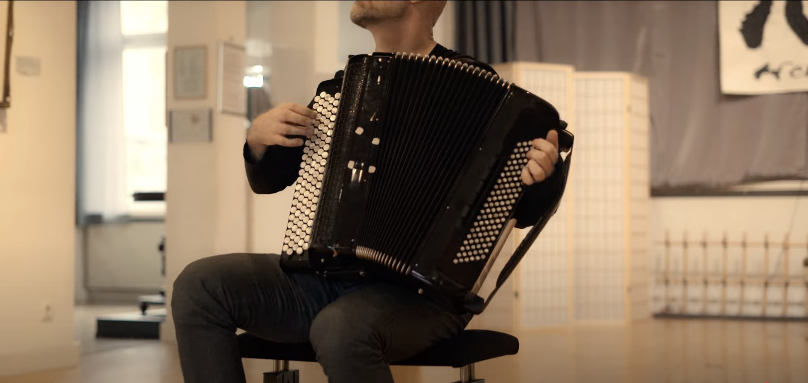

HARALD
OELER
accordionist & composer
bio
projekte
termine
news
unterricht
medien
kontakt
— Termine
termine
September — Dezember
2026

12.09.2026
Sa · 17:00 Uhr
TangoFeuer
Tangomusik & Tanz
Barockgarten Eibelstadt
13.09.2026
So · 17:00 Uhr
Duo KlAkk! goes BACH!
Ji Eun Kim & Harald Oeler
Schloß Eyb, Dörzbach
18.09.2026
Fr · 20:00 Uhr
Duo KlAkk! Encore!
Ji Eun Kim & Harald Oeler
Neuneinhalb im Gerberhaus, Bayreuth
19.09.2026
Sa · 19:00 Uhr
Sonate für Akkordeon
Solo
Arche, Dittelbrunn
26.09.2026
Sa · 19:00 Uhr
La Vie En Rose
Rannveig Káradóttir & Harald Oeler
Café Victoria, Coburg
27.09.2026
So · 19:30 Uhr
Fussissimo
Gypsy-Ethno-Jazz
Huttenschloss, Gemünden am Main
25.10.2026
So · 17:00 Uhr
Klassik im Dialog
Duo Turkalj / Oeler
NeuStadtHalle, Neustadt an der Aisch
19.11.2026
Do · 19:00 Uhr
Würzburger Bachtage
Eröffnungsakt
Bertold-Hummel-Saal, Würzburg
05.12.2026
Sa · 18:00 Uhr
Duo KlAkk! Encore!
Ji Eun Kim & Harald Oeler
Mauritiuskirche, Kirchheim am Neckar